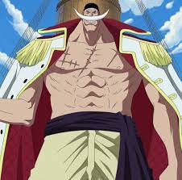

This subject has something that go here under the main title. It is
a smaller front and the collor is lower contrast
My favorite One Piece Characters
This is some subtext under the illustration of image

This is some subtext under the illustration of image
This is some subtext under the illustration of image
This is some subtext under the illustration of image
“When Do You Think People Die? When They Are Shot In The Heart With A
Pistol? No. When They Are Ravaged By An Incurable Disease? No. When
They Drink A Soup Made From Poisonous Mushrooms? No. It's When... They
Are Forgotten!”